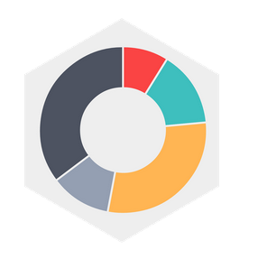

Coding for a Cause
Gene Chatham, Mateo Clarke & Davis Martin
Goal
Get Texans to log 1,000,000 fitness miles in April 2014.
Technologies & Obstacles
MapMyFitness
API
Chart.js
Heroku
Next Steps
- Leaderboard
- Badges & Rewards
- API Integration with Nike+ & RunKeeper